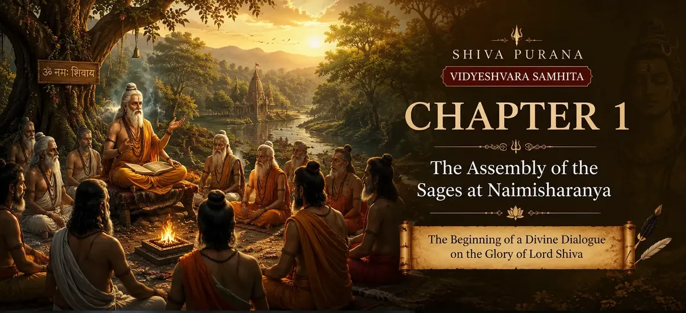

📖 Read the Sacred Shiva Purana Online • Har Har Mahadev 🔱
📖 পবিত্র শিব পুরাণ পাঠ করুন • হর হর মহাদেব 🔱

Chapter 1 → The Assembly of the Sages at Naimisharanya
প্রথম অধ্যায় → নৈমিষারণ্যে ঋষিদের মহাসভা
The sacred journey begins as the great sages gather in Naimisharanya to seek the eternal wisdom of Lord Shiva.
মহর্ষিদের নৈমিষারণ্যের পবিত্র সভা থেকে মহাদেবের চিরন্তন জ্ঞানের মহাযাত্রার সূচনা।
The Sacred Gathering
পবিত্র ঋষি-সমাবেশ
The first chapter of the Vidyeshvara Samhita opens in the sacred forest of Naimisharanya, one of the holiest places described in Hindu scriptures. Great sages, led by Shaunaka Rishi, assemble there to perform an extended sacrificial ceremony dedicated to the welfare of all beings. Their purpose is not merely ritual worship but the sincere pursuit of divine knowledge.
বিদ্যেশ্বর সংহিতার প্রথম অধ্যায় শুরু হয় নৈমিষারণ্যের পবিত্র অরণ্যে, যা হিন্দু শাস্ত্রে অন্যতম শ্রেষ্ঠ তীর্থক্ষেত্র হিসেবে পরিচিত। সেখানে শৌনক ঋষির নেতৃত্বে অসংখ্য মহর্ষি সমবেত হয়ে সমগ্র বিশ্বের কল্যাণের উদ্দেশ্যে এক মহাযজ্ঞে অংশগ্রহণ করেন। তাঁদের উদ্দেশ্য কেবল যজ্ঞ সম্পন্ন করা নয়, বরং পরম সত্য ও ঈশ্বরীয় জ্ঞান অর্জন করা।
The Arrival of Suta Mahamuni
মহর্ষি সূতের আগমন
Recognizing that spiritual wisdom is the greatest treasure, the sages respectfully welcome Suta Mahamuni, the disciple of Bhagavan Vyasa and the renowned narrator of the Puranas. They request him to reveal the supreme glory of Lord Shiva, explain the path of devotion, and narrate the sacred history that grants liberation from worldly suffering.
এই সময় ব্যাসদেবের শিষ্য এবং পুরাণের মহান আচার্য সূত মহামুনি সেই সভায় উপস্থিত হন। ঋষিগণ তাঁকে গভীর শ্রদ্ধার সঙ্গে অভ্যর্থনা জানিয়ে মহাদেবের মহিমা, ভক্তির প্রকৃত পথ এবং শিব পুরাণের পবিত্র কাহিনী বর্ণনা করার জন্য অনুরোধ করেন।
The Purpose of the Chapter
অধ্যায়ের মূল উদ্দেশ্য
This chapter establishes the spiritual atmosphere for the entire Shiva Purana. It reminds every reader that sacred knowledge should always be sought with humility, devotion and sincere curiosity.
এই অধ্যায় সমগ্র শিব পুরাণের আধ্যাত্মিক ভিত্তি স্থাপন করে এবং শিক্ষা দেয় যে সত্য জ্ঞান লাভের জন্য বিনয়, ভক্তি এবং আন্তরিক অনুসন্ধিৎসা অপরিহার্য।
The Sacred Forest of Naimisharanyaনৈমিষারণ্যের পবিত্র অরণ্য
The first chapter opens in the sacred forest of Naimisharanya, one of the holiest pilgrimage places mentioned in the Hindu scriptures. Since ancient times this forest has been regarded as a place where countless sages performed severe penance, meditation and Vedic sacrifices. Its peaceful atmosphere was believed to be especially favorable for spiritual practice and the pursuit of divine knowledge.
প্রথম অধ্যায়ের সূচনা হয় নৈমিষারণ্যের পবিত্র অরণ্যে, যা হিন্দু শাস্ত্রে বর্ণিত অন্যতম শ্রেষ্ঠ তীর্থক্ষেত্র। প্রাচীনকাল থেকেই অসংখ্য ঋষি এখানে তপস্যা, ধ্যান ও বৈদিক যজ্ঞ সম্পাদন করেছেন। শান্ত ও পবিত্র এই পরিবেশ আধ্যাত্মিক সাধনা এবং ঈশ্বরীয় জ্ঞান অর্জনের জন্য সর্বোত্তম স্থান হিসেবে বিবেচিত হতো।
The Great Assembly of the Sagesঋষিদের মহাসভা
In this sacred forest, eighty-eight thousand enlightened sages, led by the great Shaunaka Rishi, gathered together to perform a grand sacrifice (Yajna) for the welfare of the world. Their purpose was not to gain wealth, power or fame, but to preserve Dharma, attain spiritual wisdom and help future generations follow the righteous path. After completing their daily worship and sacred rituals, the sages discussed the highest truths of life and eagerly sought knowledge that could guide humanity through the challenges of the Kali Yuga.
এই পবিত্র অরণ্যে মহান ঋষি শৌনকের নেতৃত্বে অষ্টাশী হাজার (৮৮,০০০) মহর্ষি একত্রিত হয়ে সমগ্র বিশ্বের কল্যাণের জন্য এক মহাযজ্ঞে অংশগ্রহণ করেন। তাঁদের উদ্দেশ্য ছিল না ধন, ক্ষমতা বা খ্যাতি অর্জন; বরং ধর্ম রক্ষা, আধ্যাত্মিক জ্ঞান লাভ এবং ভবিষ্যৎ মানবসমাজকে সৎপথে পরিচালিত করা। প্রতিদিনের পূজা ও বৈদিক আচার সম্পন্ন করার পর ঋষিগণ জীবনের সর্বোচ্চ সত্য নিয়ে আলোচনা করতেন এবং কলিযুগে মানবজাতিকে পথ দেখাতে সক্ষম এমন দিব্য জ্ঞানের সন্ধান করতেন।
Arrival of Suta Mahamuniসূত মহামুনির আগমন
As the great sacrifice continued, the revered Suta Mahamuni arrived at Naimisharanya. He was the disciple of Sage Vyasa and was widely respected for his extraordinary knowledge of the Vedas, Puranas and ancient history. Seeing the learned sage, all the assembled rishis welcomed him with great honor, offered him a proper seat and worshipped him according to sacred tradition. They believed that Suta Mahamuni was the most qualified person to explain the eternal truths contained in the holy scriptures.
মহাযজ্ঞ চলাকালীন সময়ে পূজনীয় সূত মহামুনি নৈমিষারণ্যে আগমন করেন। তিনি মহর্ষি ব্যাসদেবের শিষ্য ছিলেন এবং বেদ, পুরাণ ও প্রাচীন ইতিহাস সম্পর্কে তাঁর অসাধারণ জ্ঞানের জন্য সর্বত্র সম্মানিত ছিলেন। তাঁকে দেখে সমবেত ঋষিগণ অত্যন্ত শ্রদ্ধার সঙ্গে অভ্যর্থনা জানান, উপযুক্ত আসনে বসান এবং বৈদিক রীতি অনুসারে পূজা করেন। তাঁদের বিশ্বাস ছিল যে, শাস্ত্রসমূহের চিরন্তন সত্য ব্যাখ্যা করার জন্য সূত মহামুনিই সর্বাধিক যোগ্য ব্যক্তি।
Questions of the Sagesঋষিদের প্রশ্নাবলী
After respectfully welcoming Suta Mahamuni, Shaunaka Rishi and the assembled sages humbly requested him to reveal the highest spiritual knowledge. They asked which path leads to the greatest welfare of humanity, how one can attain liberation from the cycle of birth and death, and who is the Supreme Lord worthy of worship. Realizing that the Kali Yuga would make spiritual practice difficult for future generations, they wished to hear a teaching that was simple, eternal and beneficial for all. These sincere questions became the sacred beginning of the Shiva Purana.
সূত মহামুনিকে যথাযথ সম্মান জানানোর পর শৌনক ঋষি ও সমবেত মহর্ষিগণ বিনয়ের সঙ্গে তাঁর কাছে সর্বোচ্চ আধ্যাত্মিক জ্ঞান প্রকাশ করার অনুরোধ করেন। তাঁরা জানতে চান—মানবজাতির সর্বোচ্চ কল্যাণের পথ কী, জন্ম-মৃত্যুর বন্ধন থেকে মুক্তি কীভাবে লাভ করা যায় এবং প্রকৃত উপাস্য পরমেশ্বর কে। কলিযুগে মানুষের জন্য সাধনা কঠিন হবে জেনে তাঁরা এমন এক চিরন্তন ও সহজ শিক্ষার সন্ধান করেন যা সকল মানুষের জন্য মঙ্গলজনক। এই আন্তরিক প্রশ্নগুলির মাধ্যমেই শিব পুরাণের পবিত্র আলোচনা শুরু হয়।
Beginning of the Divine Discourseদিব্য উপদেশের সূচনা
Pleased by the sincerity, humility and devotion of the assembled sages, Suta Mahamuni accepted their request with great joy. Before beginning his narration, he bowed to Lord Shiva, Goddess Parvati, Lord Ganesha, Sage Vyasa and his revered teachers, seeking their divine blessings. He explained that the knowledge of the Shiva Purana is eternal, destroys ignorance, strengthens devotion and ultimately guides every sincere seeker toward liberation. With the blessings of Lord Shiva, Suta then began narrating the sacred history that had been preserved by the great sages through countless generations.
সমবেত ঋষিদের আন্তরিকতা, বিনয় ও ভক্তিতে সন্তুষ্ট হয়ে সূত মহামুনি আনন্দের সঙ্গে তাঁদের অনুরোধ গ্রহণ করেন। কাহিনী শুরু করার আগে তিনি ভগবান শিব, দেবী পার্বতী, ভগবান গণেশ, মহর্ষি ব্যাসদেব এবং তাঁর পূজনীয় গুরুদের প্রণাম করে তাঁদের আশীর্বাদ প্রার্থনা করেন। তিনি জানান যে, শিব পুরাণের জ্ঞান চিরন্তন, যা অজ্ঞতা দূর করে, ভক্তিকে দৃঢ় করে এবং আন্তরিক সাধককে শেষ পর্যন্ত মোক্ষের পথে পরিচালিত করে। মহাদেবের কৃপা স্মরণ করে তিনি সেই পবিত্র ইতিহাসের বর্ণনা শুরু করেন, যা যুগের পর যুগ মহর্ষিদের মাধ্যমে সংরক্ষিত হয়ে এসেছে।
🌺 Spiritual Significance
🌺 আধ্যাত্মিক তাৎপর্য
The first chapter teaches that true spiritual knowledge begins with humility. Before asking profound questions, the sages purified themselves through sacrifice, devotion and disciplined living. Their respectful approach toward Suta Mahamuni reminds every seeker that wisdom is received through sincerity rather than pride. The chapter also emphasizes the importance of preserving sacred knowledge through the Guru–disciple tradition, ensuring that the eternal teachings of Lord Shiva remain alive for future generations.
এই অধ্যায় শেখায় যে প্রকৃত আধ্যাত্মিক জ্ঞানের সূচনা হয় বিনয় থেকে। গভীর প্রশ্ন করার আগে ঋষিগণ যজ্ঞ, ভক্তি এবং নিয়মিত সাধনার মাধ্যমে নিজেদের শুদ্ধ করেছিলেন। সূত মহামুনির প্রতি তাঁদের শ্রদ্ধা আমাদের শেখায় যে অহংকার নয়, আন্তরিকতার মাধ্যমেই প্রকৃত জ্ঞান লাভ করা যায়। একই সঙ্গে এই অধ্যায় গুরু-শিষ্য পরম্পরার গুরুত্ব তুলে ধরে, যার মাধ্যমে মহাদেবের চিরন্তন জ্ঞান যুগের পর যুগ সংরক্ষিত হয়েছে।
📚 Key Teachings of Chapter One
📚 প্রথম অধ্যায়ের মূল শিক্ষা
🙏
Humility Leads to Wisdomবিনয় জ্ঞানের পথ
📖
Respect the Guruগুরুকে সম্মান করুন
🕉️
Seek True Knowledgeসত্য জ্ঞান অনুসন্ধান
🤝
Power of Satsangসৎসঙ্গের মাহাত্ম্য
🌿
Live a Pure Lifeপবিত্র জীবনযাপন
🔱
Devotion to Shivaমহাদেবের ভক্তি
💡 Life Lessons from Chapter One
💡 প্রথম অধ্যায়ের জীবন শিক্ষা
Although this chapter was narrated thousands of years ago, its lessons remain timeless. It teaches us to seek knowledge from trustworthy teachers, remain humble regardless of our achievements, and never hesitate to ask sincere questions. The gathering of the sages reminds us that good company inspires spiritual growth, while respect for wisdom opens the door to inner transformation. Every devotee can apply these principles in daily life by cultivating discipline, devotion and a constant desire to learn.
হাজার হাজার বছর আগে রচিত হলেও এই অধ্যায়ের শিক্ষা আজও সমান প্রাসঙ্গিক। এটি আমাদের শেখায় যে বিশ্বাসযোগ্য গুরুর কাছ থেকে জ্ঞান গ্রহণ করতে হবে, সাফল্যের মধ্যেও বিনয়ী থাকতে হবে এবং আন্তরিকভাবে প্রশ্ন করতে হবে। ঋষিদের মহাসভা আমাদের স্মরণ করিয়ে দেয় যে সৎসঙ্গ আধ্যাত্মিক উন্নতির পথ খুলে দেয় এবং প্রকৃত জ্ঞান মানুষের অন্তরকে পরিবর্তন করে। নিয়মিত সাধনা, ভক্তি ও জ্ঞানার্জনের আগ্রহের মাধ্যমে প্রত্যেক ভক্ত এই শিক্ষাগুলি নিজের জীবনে প্রয়োগ করতে পারেন।
👥 Important Characters👥 গুরুত্বপূর্ণ চরিত্রসমূহ
🧘
Shaunaka Rishi
শৌনক ঋষি
Leader of the sages who initiated the sacred discussion.
ঋষিদের নেতা যিনি পবিত্র আলোচনার সূচনা করেন।
📖
Suta Mahamuni
সূত মহামুনি
Narrator of the Shiva Purana and disciple of Sage Vyasa.
শিব পুরাণের বর্ণনাকারী ও ব্যাসদেবের শিষ্য।
📚
Sage Vyasa
ব্যাসদেব
Compiler of the Puranas whose teachings were preserved by Suta.
পুরাণসমূহের সংকলক, যার শিক্ষা সূত সংরক্ষণ করেন।
🙏
88,000 Sages
৮৮,০০০ ঋষি
Great sages assembled to seek eternal spiritual wisdom.
চিরন্তন আধ্যাত্মিক জ্ঞান লাভের জন্য সমবেত মহান ঋষিগণ।
📖 Glossary📖 গুরুত্বপূর্ণ শব্দাবলী
📍
Naimisharanya
নৈমিষারণ্য
The sacred forest where the sages assembled.
পবিত্র অরণ্য যেখানে ঋষিরা সমবেত হয়েছিলেন।
🔥
Yajna
যজ্ঞ
A Vedic sacrifice performed for spiritual welfare.
আধ্যাত্মিক কল্যাণের জন্য সম্পাদিত বৈদিক যজ্ঞ।
🪔
Guru
গুরু
One who guides seekers toward divine knowledge.
যিনি শিষ্যকে ঈশ্বরীয় জ্ঞানের পথে পরিচালিত করেন।
✨
Moksha
মোক্ষ
Freedom from the cycle of birth and death.
জন্ম-মৃত্যুর চক্র থেকে চিরমুক্তি।
⭐ Chapter Summary
⭐ অধ্যায়ের সারসংক্ষেপ
The first chapter opens in the sacred forest of Naimisharanya, where thousands of sages led by Shaunaka Rishi gather to perform a great sacrifice for the welfare of humanity. When Suta Mahamuni arrives, they welcome him with great respect and request him to explain the highest spiritual truth. Understanding the importance of their questions, Suta bows to Lord Shiva, Goddess Parvati, Lord Ganesha and his revered teachers before beginning the sacred narration of the Shiva Purana. This chapter establishes the importance of humility, devotion, the Guru-disciple tradition and the sincere search for divine wisdom.
প্রথম অধ্যায়ে নৈমিষারণ্যের পবিত্র অরণ্যে শৌনক ঋষির নেতৃত্বে বহু মহর্ষির সমাবেশের বর্ণনা করা হয়েছে। তাঁরা বিশ্বকল্যাণের উদ্দেশ্যে মহাযজ্ঞ সম্পাদন করছিলেন। সূত মহামুনির আগমনের পর তাঁকে যথাযোগ্য সম্মান জানিয়ে তাঁরা সর্বোচ্চ আধ্যাত্মিক জ্ঞানের অনুরোধ করেন। সূত মহামুনি ভগবান শিব, দেবী পার্বতী, গণেশ ও গুরুদের প্রণাম করে শিব পুরাণের পবিত্র কাহিনী বর্ণনা শুরু করেন। এই অধ্যায় বিনয়, ভক্তি, গুরু-শিষ্য পরম্পরা এবং সত্য জ্ঞান অনুসন্ধানের গুরুত্ব প্রতিষ্ঠা করে।
✨ Did You Know?
✨ জানেন কি?
Naimisharanya is one of the holiest pilgrimage sites mentioned in many Hindu scriptures, including the Mahabharata, Bhagavata Purana and several other Puranas. It is traditionally believed that countless sages performed penance there, making it an ideal place for receiving divine knowledge.
নৈমিষারণ্য হিন্দু ধর্মগ্রন্থে বর্ণিত অন্যতম পবিত্র তীর্থস্থান। মহাভারত, ভাগবত পুরাণসহ বহু পুরাণে এই স্থানের উল্লেখ রয়েছে। বিশ্বাস করা হয় অসংখ্য ঋষি এখানে তপস্যা করেছিলেন এবং তাই এটি ঈশ্বরীয় জ্ঞান লাভের আদর্শ স্থান।
➡ What Happens Next?
➡ এরপর কী ঘটবে?
Having welcomed Suta Mahamuni with great respect, the sages prepare to hear the supreme teachings. In the next chapter they ask profound questions regarding the origin of the universe, the greatness of Lord Shiva and the path to liberation. These questions become the foundation of the entire Shiva Purana.
সূত মহামুনিকে যথাযোগ্য সম্মান জানিয়ে ঋষিরা এখন পরম জ্ঞানের জন্য প্রশ্ন করেন। পরবর্তী অধ্যায়ে তাঁরা সৃষ্টির উৎপত্তি, ভগবান শিবের মহিমা এবং মোক্ষের পথ সম্পর্কে গভীর প্রশ্ন উত্থাপন করেন। এই প্রশ্নগুলিই সমগ্র শিব পুরাণের ভিত্তি স্থাপন করে।
① Why did the sages gather in Naimisharanya?
① ঋষিরা নৈমিষারণ্যে কেন সমবেত হয়েছিলেন?
The sages gathered to perform a great yajna and seek the highest spiritual knowledge for the welfare of all living beings.
ঋষিরা মহাযজ্ঞ সম্পাদন এবং সকল জীবের কল্যাণের জন্য সর্বোচ্চ আধ্যাত্মিক জ্ঞান লাভের উদ্দেশ্যে সমবেত হয়েছিলেন।
② Who is Suta Mahamuni?
② সূত মহামুনি কে?
Suta Mahamuni is the narrator of the Shiva Purana. He received sacred knowledge from Sage Vyasa and other great sages.
সূত মহামুনি শিব পুরাণের প্রধান বর্ণনাকার। তিনি ব্যাসদেব এবং অন্যান্য মহান ঋষিদের কাছ থেকে পবিত্র জ্ঞান লাভ করেছিলেন।
③ Why is Naimisharanya considered sacred?
③ নৈমিষারণ্য কেন পবিত্র বলে বিবেচিত?
Naimisharanya is one of the holiest forests mentioned in Hindu scriptures and has long been a center of penance, study and spiritual practice.
নৈমিষারণ্য হিন্দু ধর্মগ্রন্থে বর্ণিত অন্যতম পবিত্র তীর্থস্থান, যেখানে যুগ যুগ ধরে তপস্যা, অধ্যয়ন ও সাধনা অনুষ্ঠিত হয়েছে।
④ What is the main lesson of Chapter One?
④ প্রথম অধ্যায়ের মূল শিক্ষা কী?
The chapter teaches that humility, devotion and sincere inquiry are essential for attaining divine knowledge.
এই অধ্যায় শিক্ষা দেয় যে বিনয়, ভক্তি এবং আন্তরিক জিজ্ঞাসাই ঈশ্বরীয় জ্ঞান লাভের প্রধান উপায়।
⑤ What happens after this chapter?
⑤ এই অধ্যায়ের পরে কী ঘটে?
After welcoming Suta Mahamuni, the sages begin asking profound questions about Lord Shiva, creation, the universe and liberation.
সূত মহামুনিকে অভ্যর্থনা জানানোর পর ঋষিরা ভগবান শিব, সৃষ্টি, বিশ্বব্রহ্মাণ্ড এবং মোক্ষ সম্পর্কে গভীর প্রশ্ন করতে শুরু করেন।
The Shiva Purana is one of the eighteen Mahapuranas of Hinduism dedicated to Lord Shiva. It contains sacred stories, spiritual teachings, rituals, philosophy, and guidance for attaining devotion and liberation.
শিব পুরাণ হিন্দুধর্মের অষ্টাদশ মহাপুরাণের অন্যতম এবং ভগবান শিবকে উৎসর্গ করা হয়েছে। এতে পবিত্র কাহিনী, আধ্যাত্মিক শিক্ষা, উপাসনা, দর্শন এবং মোক্ষলাভের পথ বর্ণিত হয়েছে।
② Can I read Shiva Purana online for free?
② আমি কি বিনামূল্যে অনলাইনে শিব পুরাণ পড়তে পারি?
Yes. Bholenath Dham provides free access to Shiva Purana chapters, explanations, and spiritual teachings for devotees around the world.
হ্যাঁ। ভোলেনাথ ধাম বিশ্বব্যাপী ভক্তদের জন্য শিব পুরাণের অধ্যায়, ব্যাখ্যা এবং আধ্যাত্মিক শিক্ষা বিনামূল্যে উপলব্ধ করেছে।
③ Which Samhita should I start with?
③ কোন সংহিতা দিয়ে শুরু করা উচিত?
The traditional starting point is Vidyeshvara Samhita, which explains the glory of Lord Shiva, the origin of the Shiva Purana, and the importance of devotion.
ঐতিহ্যগতভাবে বিদ্যেশ্বর সংহিতা দিয়ে পাঠ শুরু করা হয়, যেখানে ভগবান শিবের মাহাত্ম্য, শিব পুরাণের উৎস এবং ভক্তির গুরুত্ব বর্ণিত হয়েছে।
④ What are the benefits of reading Shiva Purana?
④ শিব পুরাণ পাঠের উপকারিতা কী?
Reading Shiva Purana deepens devotion to Lord Shiva, strengthens spiritual understanding, promotes righteous living, and inspires inner peace.
শিব পুরাণ পাঠ ভগবান শিবের প্রতি ভক্তি বৃদ্ধি করে, আধ্যাত্মিক জ্ঞান গভীর করে, সৎ জীবনযাপনে অনুপ্রাণিত করে এবং মানসিক শান্তি প্রদান করে।
⑤ Is Shiva Purana suitable for beginners?
⑤ নতুন পাঠকদের জন্য কি শিব পুরাণ উপযোগী?
Yes. The Shiva Purana can be read by beginners and experienced devotees alike. Reading with sincerity, devotion, and patience is considered most important.
হ্যাঁ। নতুন এবং অভিজ্ঞ উভয় ভক্তই শিব পুরাণ পাঠ করতে পারেন। আন্তরিকতা, ভক্তি এবং ধৈর্যের সঙ্গে পাঠ করাই সবচেয়ে গুরুত্বপূর্ণ।
Continue Your Sacred Journey
আপনার পবিত্র যাত্রা চালিয়ে যান